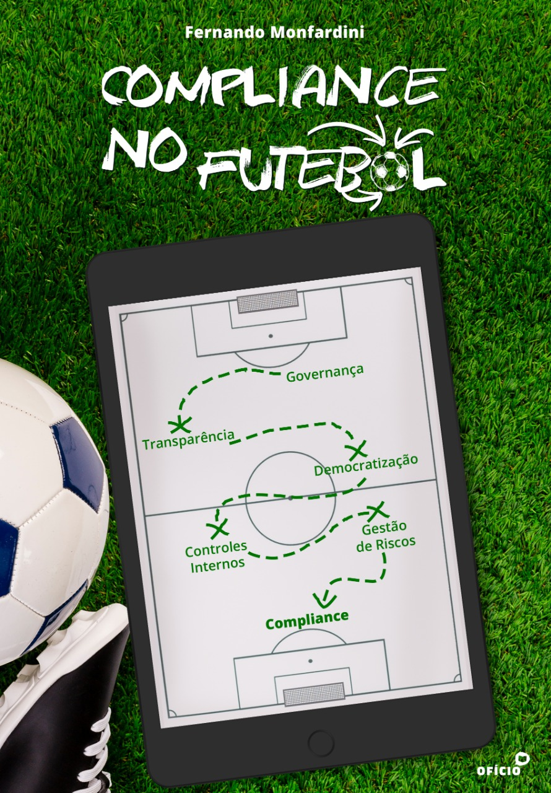

Compliance & Governança
Estruturas de integridade desenhadas desde a origem, não adaptadas depois do problema.
F E R N A N D O
Integrity by Design
Integridade não é camada. É arquitetura.
Construímos sistemas onde ética e estratégia são a mesma decisão.
Fernando Monfardini opera na interseção rara entre o mundo corporativo, o esporte de elite e a academia. CCO do Clube Atlético Mineiro, autor, palestrante em eventos nacionais e internacionais e consultor, com um perfil sem paralelo no mercado brasileiro de compliance.
Estruturas de integridade desenhadas desde a origem, não adaptadas depois do problema.
Privacidade como vantagem competitiva, não como obrigação regulatória.
Prevenção à lavagem de dinheiro com inteligência de risco, não apenas checklist.
Mapeamento e mitigação que antecipam cenários, não que reagem a crises.
Conteúdo que transforma cultura, não apenas cumpre carga horária.
O primeiro ecossistema brasileiro dedicado à integridade no esporte. Onde compliance encontra o campo.
Conheça o projeto →
A obra de referência sobre integridade e governança no esporte brasileiro — um mergulho prático e conceitual no tema que Fernando Monfardini ajudou a construir no país.
Saiba mais →